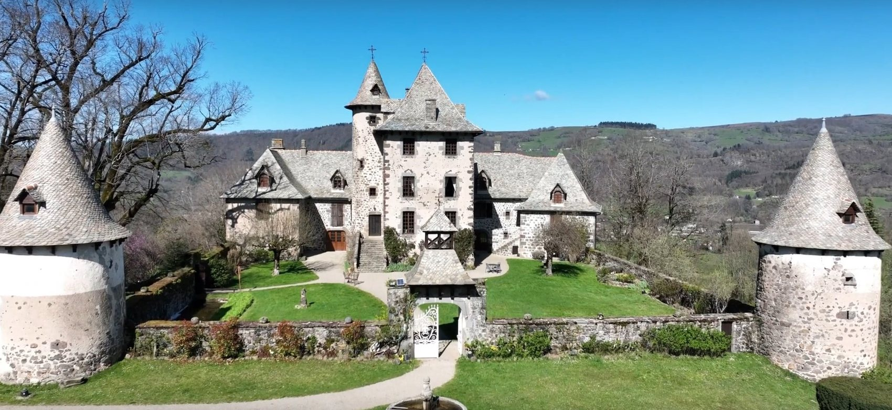

Accueil · Contact
Venez visiter
Une date, une question, un repérage : nous vous répondons et nous vous faisons découvrir le château.
Parlons de votre réception
Le plus simple est de nous appeler. Vous pouvez aussi choisir votre date dans le calendrier ou nous écrire avec le formulaire.
4,4★★★★☆6 avis de couples sur Mariages.netVenir au château
- Gare de Polminhacà 2 minutes, ligne Aurillac-Clermont
- Aurillacà 18 minutes, 13 km
- Vic-sur-Cèreà 18 minutes
- Aéroport d’Aurillacà 22 minutes
- Clermont-Ferrandà 2 h 20
- Toulouseà 3 h 30
Le château est ouvert pour les repérages de vos séminaires, mariages et événements sur rendez-vous.
Avant de réserver
Combien coûte une réception au château ?
La location du domaine commence à 8 800 €, selon la date, la formule et le nombre d’invités. Trois formules existent : le Pack Noces avec les essentiels, le Pack Premium qui ajoute les installations techniques, le Pack Cérémonie Laïque pour l’expérience complète. Appelez-nous au 06 77 18 46 62 pour un devis à votre date.
Combien d’invités peut-on recevoir ?
De 50 à 350 personnes. Le Pavillon au Roy reçoit jusqu’à 200 convives assis et 280 en cocktail, la Cour Médiévale jusqu’à 350 en cocktail, l’Esplanade des Tilleuls jusqu’à 200 pour la cérémonie. Le château ne reçoit qu’un seul événement à la fois : le domaine entier est à vous.
Peut-on dormir sur place ?
Oui : onze chambres accueillent de seize à trente adultes, dont une suite nuptiale de 70 m² avec son salon privé. Elles se louent dans le cadre d’un événement au château. Les familles nombreuses prennent les chambres de la Tour, jusqu’à quatre couchages.
Qui s’occupe du repas ?
Le château travaille avec des traiteurs partenaires, qui connaissent la cuisine du Pavillon au Roy et son office de préparation. Les prestataires référencés couvrent aussi le DJ, les fleuristes et les photographes. Dites-nous votre projet, nous vous mettons en relation.
Et s’il pleut le jour de la cérémonie ?
La Galerie des Arts prend le relais pour le vin d’honneur, en quelques minutes, sans rien changer au reste de la journée. La tente de l’Esplanade des Tilleuls abrite la cérémonie et la piste de danse.
Jusqu’à quelle heure dure la soirée ?
La musique peut se prolonger jusqu’à cinq heures du matin dans le Pavillon au Roy. Le départ se fait le lendemain à dix-sept heures. Une navette ramène vos invités, pour trois heures ou pour toute la nuit.
Où se garent les invités ?
Trois parkings privés accueillent plus de cent voitures sur le domaine, avec des places supplémentaires à proximité. La gare de Polminhac est à deux minutes, l’aéroport d’Aurillac à vingt-deux minutes.
Comment visiter le château ?
Le château est ouvert aux repérages sur rendez-vous. Choisissez une date dans le calendrier ou écrivez-nous : nous vous rappelons pour organiser la visite.